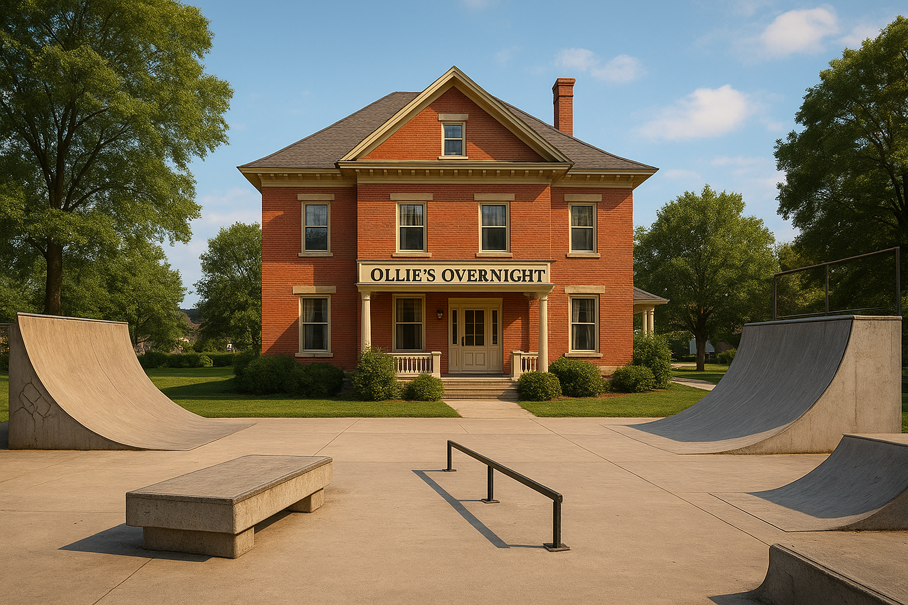

Grab your board and come on down!
Welcome to paradise! At our one-of-a-kind skate-park bed & breakfast, every day starts with fresh coffee, warm waffles, and the sound of wheels rolling across smooth concrete.
Whether you’re here to shred the ramps, cruise the flow lines, or just kick back and watch the action from a sunny porch, our cozy rooms and custom-built skate features make this the perfect getaway for skaters, families, and adventure seekers alike.
Specialty Stays and Signature Events
At Ollie’s Overnight, guests can stay in style with our two signature spaces: The Deck Room, a cozy, board-inspired retreat featuring wall-mounted skate art and warm, wood-grain finishes, and The Halfpipe Suite, a spacious upstairs getaway with curved architectural accents that echo the flow of a real ramp.
Our weekend events bring the kind of energy skaters love, from our hands-on DIY Deck Art Workshop, where guests paint their own custom boards, to Bagels and Boards, a relaxed morning meetup offering fresh bagels, coffee, and an easygoing skate session to start the day right. Whether you're here to ride, relax, or create, Ollie’s Overnight blends comfort with skate-culture charm.